6
Two-third of the earth we live in are oceans. Though known by many names, they
are all connected. The rest of the earth excluding ocean is the land.
Like oceans, are the land areas connected to each other?
Large landmasses are called Continents, meaning ‘pieces of land’. A continent is
a large landmass containing different physiographic divisions. We can see many
land forms like tall mountains, expansive plains, vast deserts, plateaus etc. in the
Indian Subcontinent
Fig. 6.1
CONTINENTS AND OCEANS
ARCTIC OCEAN
ATLANTIC
OCEAN
NORTH
AMERICA
SOUTH
AMERICA
AUSTRALIA
AFRICA
ANTARCTICA
PACIFIC
OCEAN
INDIAN
OCEAN
PACIFIC
OCEAN
EUROPE
ASIA
Page 82
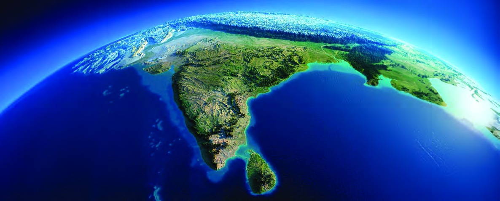
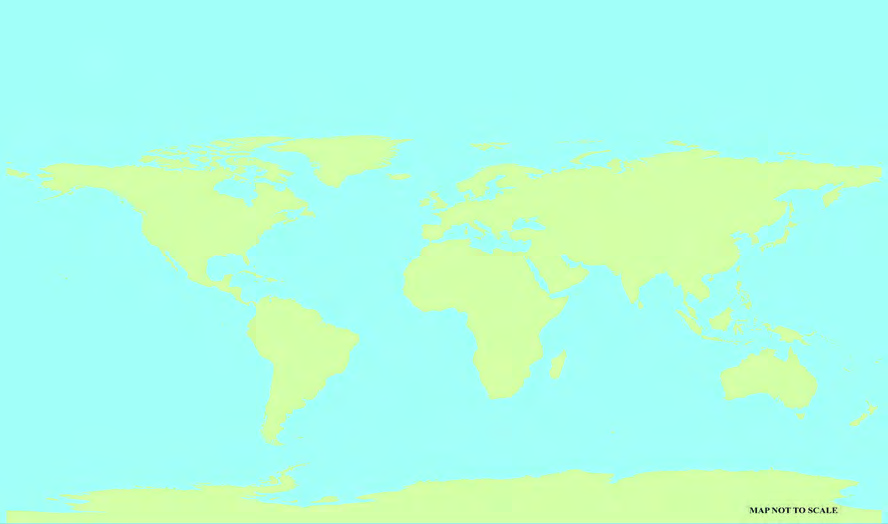
Page 83
83
Indian Subcontinent
continents. List the different continents by observing the map given and a globe
(Fig. 6.1). Find the continent in which our country is located.
Subcontinents
Subcontinents are large continental areas with diverse physiographic divisions and
climates as in continents. The Pamir plateau geographically separates the southern
part of Asian continent from the other parts. The topography of Indian subcontinent
consists of high mountain peaks, vast
plains, desert regions, plateaus formed of
hard rocks, coastal plains and islands.
The Indian subcontinent is bordered by the
Himalayas on the north, the Arakan ranges
on the east and the Hindukush range on the
west. The southern boundary of the Indian subcontinent is the Indian Ocean.
The Indian ocean is the only ocean named after a country.
Identify the countries that belong to Indian subcontinent from the given map
(Fig 6.2)
l India
l Bangladesh
l
l
Let’s see the mountain ranges in the Northern part of the Indian subcontinent.
Observe the map (Fig. 6.2). They are the Hindukush mountain range in Pakistan
and Himalayan mountain range in India, Nepal and Bhutan. Most of the high peaks
in the world are located in this mountain region.
To the south of the Himalayas lies a vast plain. This extensive plain is formed by
the alluvial deposits brought by the rivers Indus, Ganga and Brahmaputra. These
plains, known as North Indian Plain or Great plains, stretch from the east to the
west of the subcontinent.
The Pamir knot, known as the
roof of the world, is the meeting
point of Tian Shan, Karakoram,
Kunlun and Hindukush mountain
ranges.
Page 84
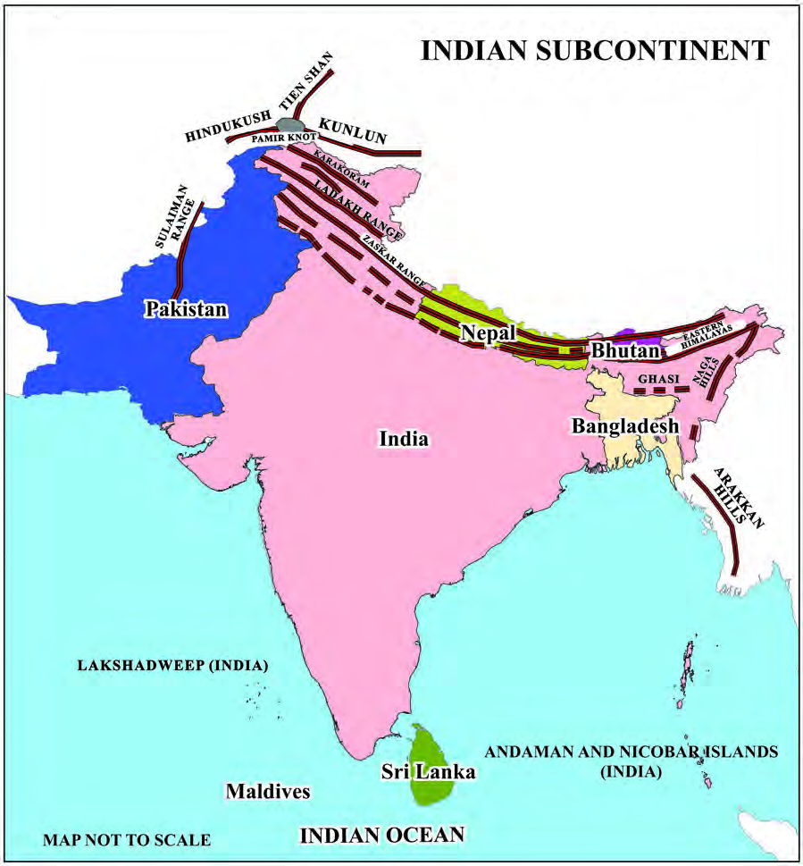
- Part 1
84
VII
Social Science
Let’s see the features of North Indian plains.
l Fertile soil
l Abundant water supply from rivers
l Plain landscape
l Thickly populated
The southern part of the North Indian Plain is a plateau. It is estimated to have
an elevation of about 150 to 900 metres above sea level. This roughly triangular
shaped physiographic division is called Peninsular Plateau.
Fig. 6.2
Page 85
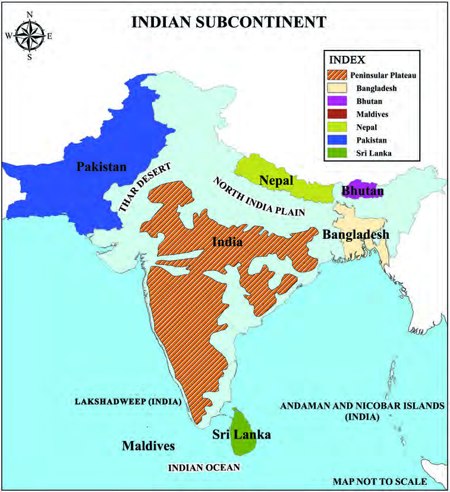
85
Indian Subcontinent
Find the location of the Peninsular Plateau with the help of the map
(Fig. 6.3)
Fig. 6.3
The Thar Desert is an arid land that stretches northwest of the Peninsular plateau
across India and Pakistan. In this sparsely rainfed region, the natural vegetation
includes cacti and shrubs.
Observe the map (Fig. 6.3). Indian subcontinent has a long coastline. The island
nations of Maldives and Sri Lanka and smaller island groups such as Lakshadweep,
and Andaman and Nicobar etc. are part of the Indian subcontinent.
Compare the given pictures (Fig. 6.4, 6.5) and identify the life of people in the land
forms concerned.
Peninsular Plateau
Page 86
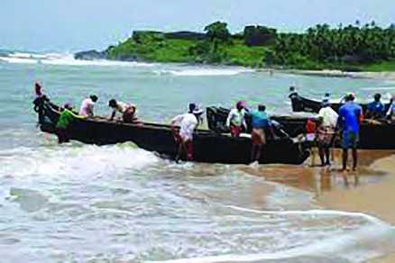
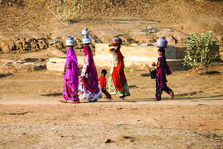
- Part 1
86
VII
Social Science
Fig. 6.4
Fig. 6.5
The Indian subcontinent has unique climatic conditions.
Although there exist regional variations, the climate of the Indian subcontinent
is generally known as ‘monsoon climate’. The word monsoon is derived from
the Arabic word ‘mausim’ which means seasons. Monsoon winds influence the
climate of the Indian subcontinent. This wind changes its direction according to
the seasons.
The works of Arab traveller and writer, Al Masudi, mentions about
monsoon winds that change direction according to seasons.
During summer solstice, when
the
position of the sun is over the
subcontinent, the air over the land gets
heated and rises. The moisture laden
wind from the ocean blows towards
land and it rains in many parts of the
subcontinent. During the months of
May and June, the southwesterly winds
blowing from the Indian Ocean to the
Indian subcontinent causes widespread
rainfall.
During winter solstice, when the
position of the sun is over the Indian
Ocean, the air over the sea gets heated
and rises and the wind blows here from the north. As the winds blowing from the
Northeast to the Southwest during September and October are generally dry, the
Apparent
Movement of the
Sun
The phenomenon in which the relative
position of the sun changes between
the Tropic of Cancer (23½° North)
and Tropic of Capricorn (23½° South)
is known as the apparent movement
of the sun. Due to the revolution of
the earth and the inclination of earth’s
axis, it feels that the sun experiences
displacement.
Page 87
87
Indian Subcontinent
amount of rainfall will be less. But the absorption of water vapour from the Bay of
Bengal leads to widespread rainfall over the eastern coast of the peninsula.
Don’t you understand that the Indian subcontinent does not receive the same
amount of rainfall everywhere?
Let’s see the factors that influence climate of an area.
l The Latitude
l The Altitude
l Physiography
l Proximity to ocean
l Wind
The climatic experiences are different on either side of Tropic of Cancer, an
important latitude. The northern part of Tropic of Cancer experiences temperate
climate while the southern part has tropical climate.
The difference in temperature during the winter and summer seasons in tropical
region is generally moderate. But the difference is generally greater in the temperate
regions.
Read a few sentences of the letter written by Diya, student of Government Model
Residential School, Munnar to her sister in Thiruvananthapuram.
Dear sister,
Hope you are fine. How is
your studies going? Tourists
come here to see the vast tea
plantations of the area, but
the climate here is extremely
cold! Even during day time I
have to wear woolen clothes
in class. It is so cold that I use
two blankets at night. When
I was at home, I used fan
even at night and had taken
bath in plain water. Now I
can’t even think of bathing in
plain water here! When I come
to
Thiruvananthapuram
for
vacation, I will definitely bring
apples and strawberries grown
here, as they won’t grow in our
hot climate!
Page 88
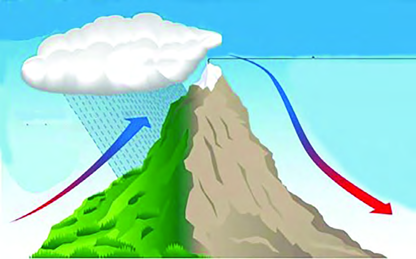
- Part 1
88
VII
Social Science
Have you ever thought why places like Munnar and Ooty experience cold climate?
Don’t you remember that in the last chapter we studied about the normal lapse
rate?
Physiography is another important factor that influences climate. Moisture laden
winds are obstructed by the mountains, located against their direction resulting in
rainfall. Kerala, located in the western slopes of the Western Ghats, receives heavy
rainfall while Tamil Nadu, located in the eastern slopes gets low rainfall. Have you
understood the reason now? Such regions with low rainfall are generally known as
rain shadow regions.
RAIN SHADOW REGIONS
Moisture condenses into clouds
Windward side
Fig. 6.6
When moisture laden winds blow parallel to the mountain ranges, winds pass
without precipitation because there are no barriers to obstruct. This is the reason
behind the desertification of the region comprising Aravalli ranges of Rajasthan.
Areas in close proximity to ocean experience humid climate and areas far away
from the ocean experience a relatively dry climate.
The direction of the wind and the amount of moisture in it influences the climate.
Do these regional differences in physiography and climate create any differences
in the life of the people?
Page 89
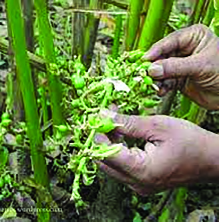
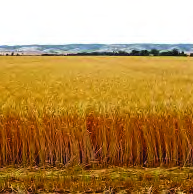
89
Indian Subcontinent
Are the food habits of the people of north and south India the same?
Is the dress style of the people of Kashmir the same as that of the people of Tamil
Nadu?
Are the major crops cultivated in the Western Ghats and North Indian plain the
same? Identify the crop grown in the Western Ghats from the given pictures
(Fig. 6.7, 6.8).
Fig. 6.7
Cardamom cultivation
Fig. 6.8
Wheat field
Answer the above questions by collecting information from various
sources.
The agriculture, food, housing, clothing, rituals, celebrations etc. of the people in
each area is in accordance with the physiography and climate of that region.
As the majority of people in India are engaged in agriculture, the fluctuations in
rainfall distribution have a significant influence on people’s lives. While extensive
cultivation is practiced in heavy rainfall areas, many regions are rendered unfit for
cultivation due to water scarcity. Crops grown also vary according to fluctuations
in rainfall. Rice is the major cereal crop in regions with heavy rainfall while wheat
in the regions with moderate rainfall. Pulses and coarse grains are grown in regions
with low rainfall.
Page 90
- Part 1
90
VII
Social Science
See the table given below.
Crop
Water
Requirement
Sowing
months
Harvest
months
Rice
Abundant water is
needed
June
September
Wheat
Moderate amount of
water is needed
October
March
Watermelon
Irrigation is needed
in areas with sparse
rainfall
April
June
Didn’t you understand that crops are grown in different seasons? There are definite
seasons for sowing and harvesting of each crop. These seasons are known as
cropping seasons. There are three cropping seasons in India.
l Kharif
l Rabi
l Zaid
During Kharif season that coincides with the south – west monsoon, crops that
require high temperature and abundant water like paddy, cotton, jute, jowar, bajra
and tur are cultivated.
The Rabi season, which begins with the onset of winter during the months of
October – November, is the season for the cultivation of wheat, pulses, mustard
etc. that require only moderate temperature and water. The Rabi season ends in
February.
Zaid is the short summer cropping season that begins after Rabi harvest. During
this season, watermelon, cucumber, vegetables, fodder crops etc. are grown in
areas where irrigation is available. Although there are three agricultural seasons in
India, regional variations are evident.
Page 91
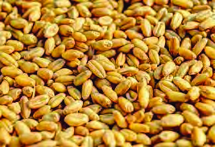
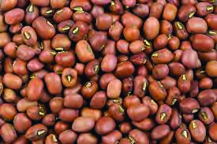
91
Indian Subcontinent
Let us see how to classify the major crops grown in India?
Food crops
Food crops are classified into two: Cereals and Pulses. In India, fine cereals such as
rice and wheat and coarse cereals such as bajra, maize and ragi are grown.
Fig. 6.9
Wheat
Fig. 6.10
Gram
Gram and Toordal are the major pulses cultivated in India.
Cash crops
The crops that are grown commercially on a large scale are called cash crops.
These include sugar cane, tobacco, cotton, jute and oil seeds.
Fibre crops
Cotton and jute are the major fibre crops in India. Fibre crops provide us with the
fibre we need to make many things like fabrics, bags and sacks.
Oil seeds
Oil seeds are cultivated to produce edible oil. These include ground nut, rapeseed,
mustard, soya bean and sunflower.
Apart from these, other crops such as tea, coffee, rubber, spices and tubers are also
cultivated in India. Among these many are cultivated as plantation crops.
Now you know about the different types of crops. Are all these cultivated in the
same way?
Page 92
- Part 1
92
VII
Social Science
In different parts of the world, there exists various types of farming practices based
on physiography, soil fertility, climate, water availability, density of population,
extent of agricultural land, value of crops, available technology etc. These include
primitive subsistence agriculture, intensive subsistence agriculture, mixed farming,
extensive commercial grain cultivation, dairy farming, cultivation of plantation
crops and horticulture. In the next chapter, we shall discuss the different types of
farming in India.
Extended Activities
l Prepare an essay with the help of reading materials and internet, finding out
the countries belonging to the Indian subcontinent, their capitals and cultural
features.
l Prepare a wall paper by collecting pictures that showcase the cultural diversity
of different countries in the Indian subcontinent.
l Colour and label the countries of Indian subcontinent in the outline map
provided.
Page 93
93
Indian Subcontinent
OUTLINE MAP OF INDIAN
SUBCONTINENT